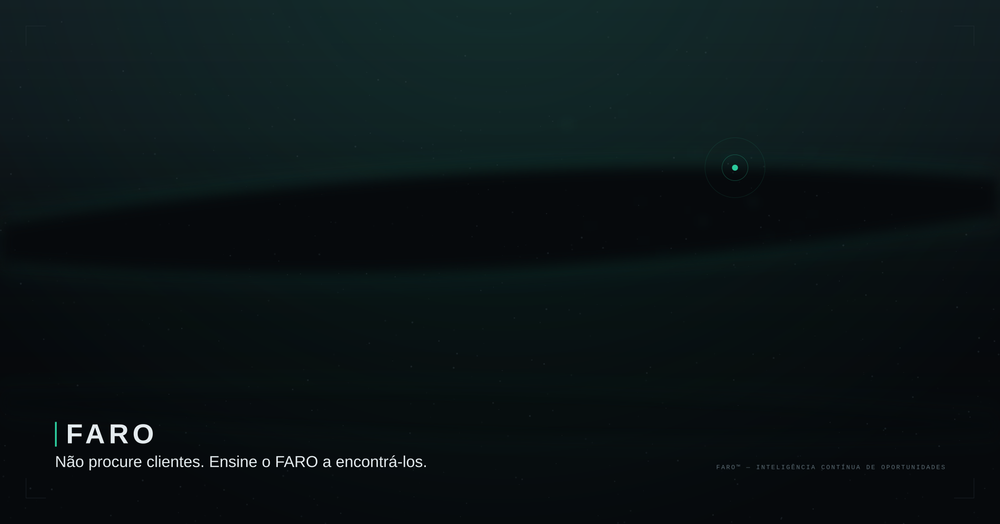
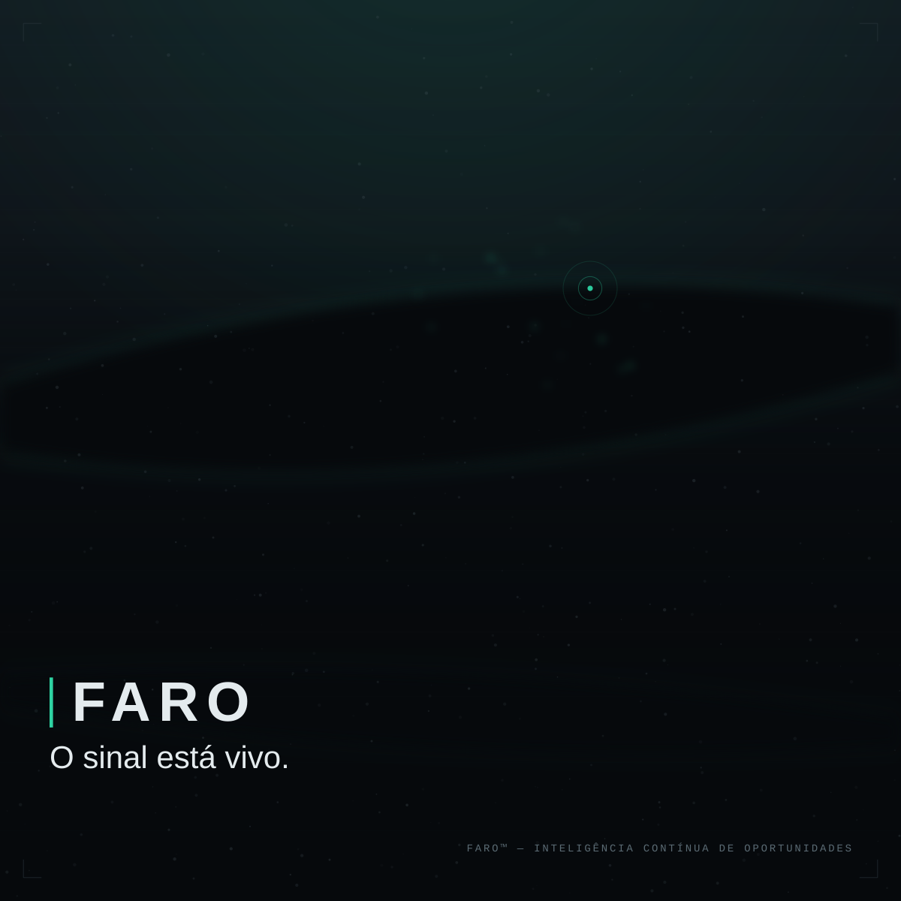
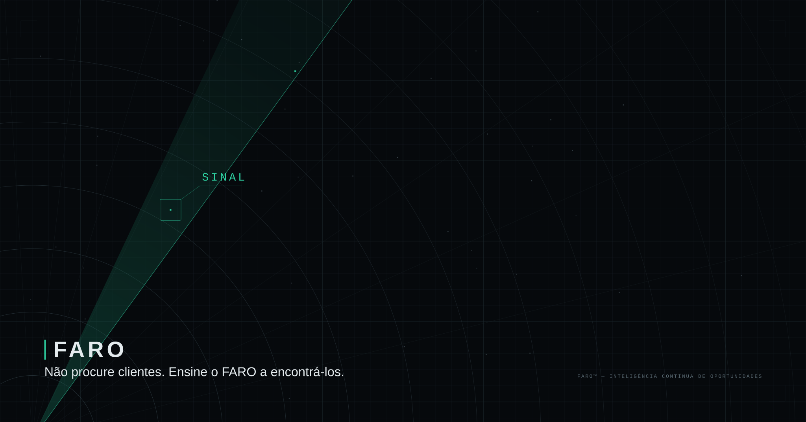
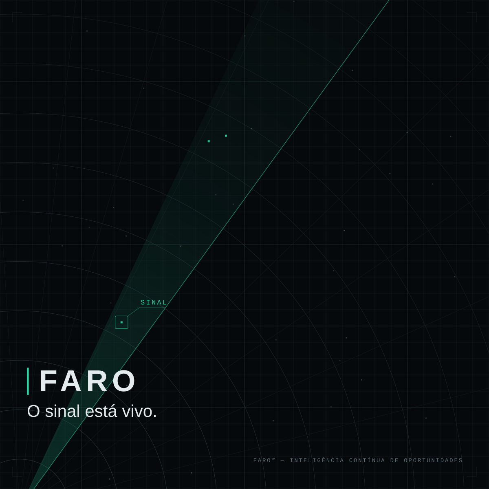
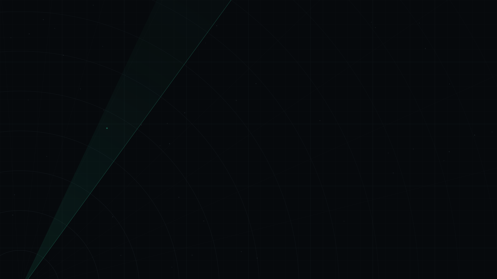
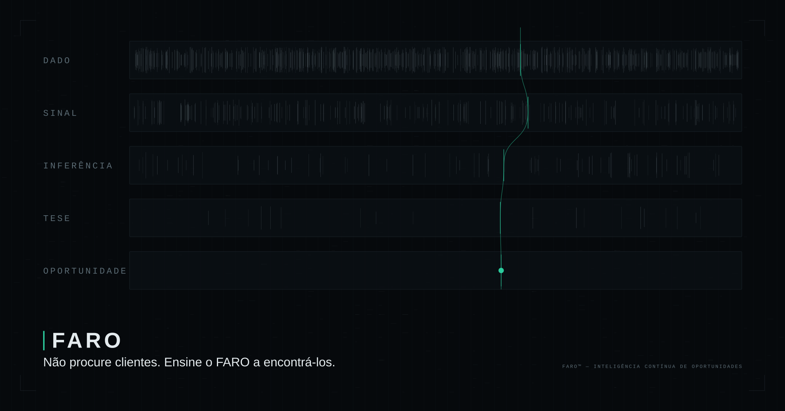
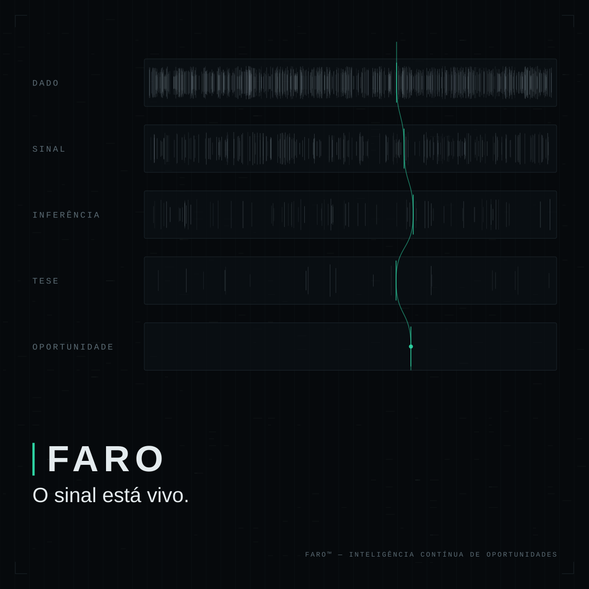
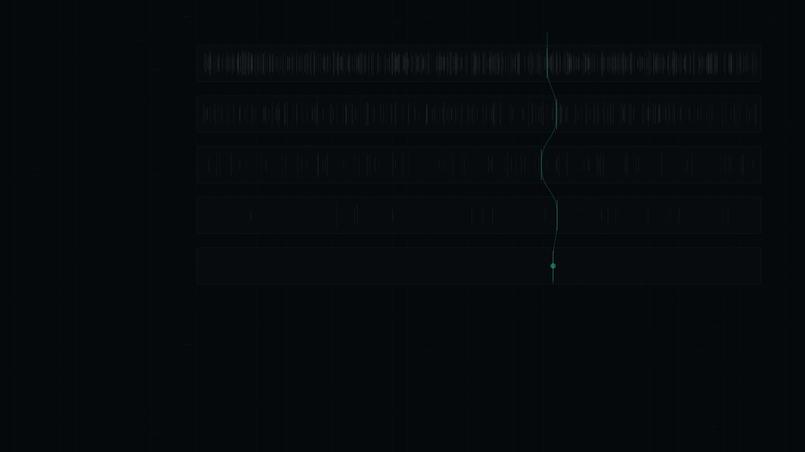

FARO — RODADA 1
TRÊS DIREÇÕES · RASCUNHO DE AVALIAÇÃO · A ESCOLHA É DO DONO
DIREÇÃO A — abissal

hero 2400×1260 · 48.7 KB

social 1200×1200 · 34.6 KB
textura 1920×1080 · 47.1 KB
DIREÇÃO B — sonar

hero 2400×1260 · 13.3 KB

social 1200×1200 · 11.7 KB

textura 1920×1080 · 10.9 KB
DIREÇÃO C — documental

hero 2400×1260 · 130.1 KB

social 1200×1200 · 115.6 KB

textura 1920×1080 · 126.6 KB